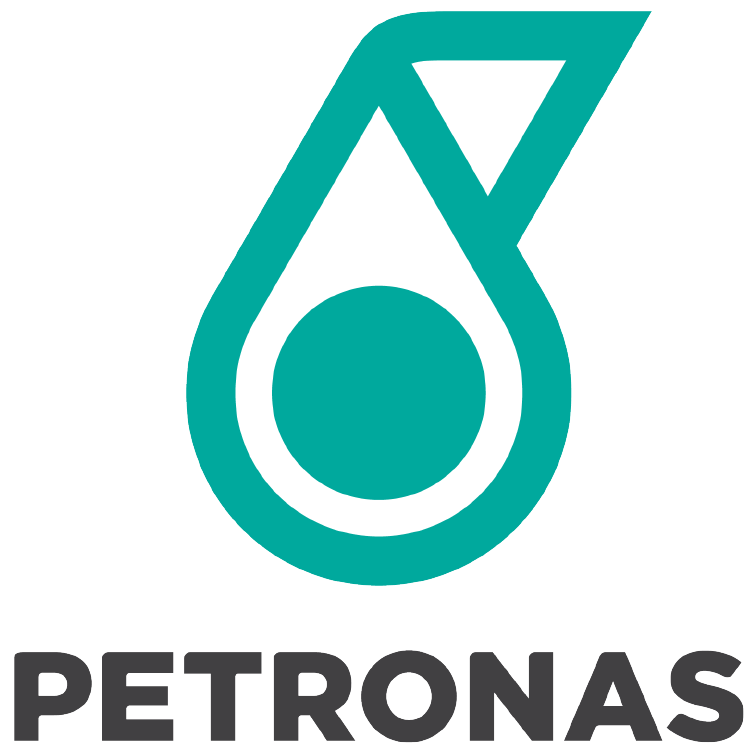
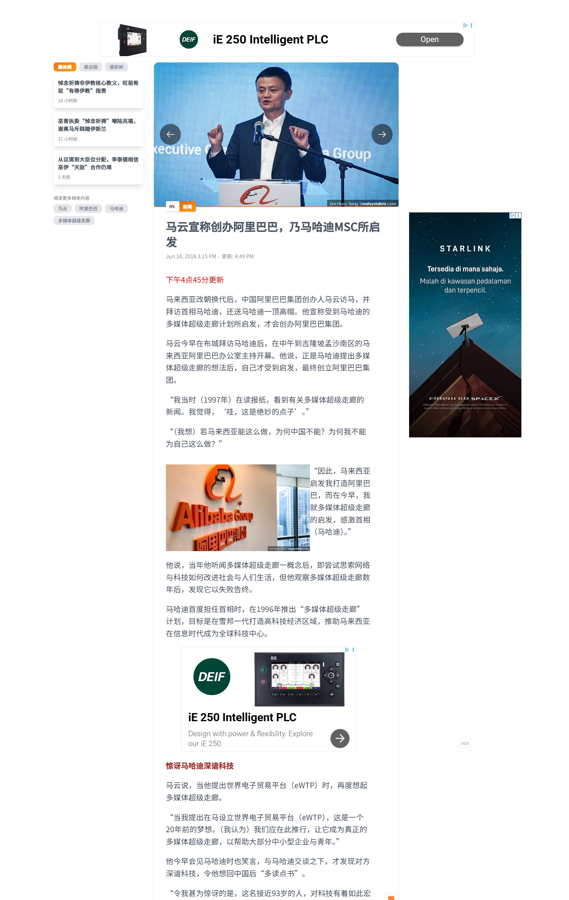

马来西亚史 · 1.8.1 独立后各领域的发展
独立后的经济发展概况
从农矿出口国到工业国的转型之路
S3 高三历史
W26
星期三
1 / 16
背景：吉隆坡天际线 · Wikimedia Commons
想一想
独立后的马来西亚经济
马来西亚独立之初，主要依赖
橡胶和锡矿
出口。
数十年间，这个国家完成了从农矿出口国向
制造业强国
的转型。
今天，它又面临新的挑战——如何走出"
中等收入陷阱
"？
2 / 16
图：Mersing 油棕园 · Chan Denys · CC BY-SA 3.0 · Wikimedia Commons
第一阶段 · 1971–1990
转型起步
新经济政策 · 重工业 · 基础设施建设
3 / 16
背景：Sime Darby 油棕园 · Chong Soon Wah · CC BY-SA 3.0 · Wikimedia Commons
NEP · 新经济政策
向制造业转型
在第二至第四个马来西亚计划 ( 1971-1985 )，主要贯彻
新经济政策
。
鼓励以
电子业
与
纺织成衣业
为主的出口导向型经济。
其中
油棕业
取代橡胶业成为最重要的出口产业。
4 / 16
图：Mersing 油棕园 · Chan Denys · CC BY-SA 3.0 · Wikimedia Commons
促进投资法
鼓励外资与中小企业
政府推行《
促进投资法
》，积极鼓励外国投资。
鼓励国内资本发展中小型企业，为中小企业提供各种便利。
以华人资本为主的中小型企业迅速发展起来。
5 / 16
图：马来西亚工业区（促进投资法带动的外资制造业）· Wikimedia Commons
能源与重工业
国家石油与重工业起步
1973年发现油田，次年成立
国家石油集团公司
，石油化学工业成为国家财库重要支柱。
第五、第六个马来西亚计划（1986-1995）强调发展
重工业
。
成立
马来西亚重工业机构
。

6 / 16
图：Petronas 国家石油公司 Logo
汽车与基建
国产车与南北大道
与
日本三菱
集团联营，制造
国产车
。
南北大道
和
槟威大桥
建设，便利货物运输。
7 / 16
图：Proton Saga（马来西亚第一款国产车）· Wikimedia Commons
第二阶段 · 1991–2000
腾飞与风暴
国家发展政策 · 多媒体超级走廊 · 亚洲金融风暴
8 / 16
背景：吉隆坡天际线 · J.L.S. · CC BY 2.0 · Wikimedia Commons
NDP · 国家发展政策
国家发展政策与2020宏愿
1991年
，新经济政策推行届满，政府的数据显示，马来人在工商业股份占有的比例，并未达到理想的目标。
为持续加强马来人的经济实力，也消除其他民族对政府保护马来人经济政策的不满。
政府提出"
国家发展政策
"的二十年中长期经济计划，以便我国
2020年
时在经济、政治和社会等方面达到发达国家水平。
提出国家发展政策和"
2020宏愿
"，以提高生产力作为经济增长的主要动力，实现经济结构由劳动密集型转向
技术密集型
。
9 / 16
图：Petronas 双子塔 · Wikimedia Commons
课外拓展
马云：MSC启发了阿里巴巴
2018年，马云访问马来西亚时，当众感谢首相马哈迪。
他说："我当时在读报纸，看到有关
多媒体超级走廊
的新闻。我觉得，'哇，这是绝妙的点子'。"
"
马来西亚启发我打造阿里巴巴
。"

10 / 16
图：马云 2018 年访马谈 MSC · 当今大马 Malaysiakini
MSC · 多媒体超级走廊
多媒体超级走廊与东方硅谷
"
多媒体超级走廊
"是实践这个宏愿的主要计划。
1996年
后的大马计划，明确了资讯工艺在我国各个领域的发展。
在通讯基础设施建设、人力资源开发和电子化行政作业等，都取得飞跃成长。
槟城峇六拜
自由工业区因为吸引许多国际电子巨擘设厂，而有"
东方矽谷
"美称。
11 / 16
图：峇六拜自由工业区（东方硅谷）· Wikimedia Commons
⚠️ 危机
亚洲金融风暴的冲击
1990-1996年
间政府财政呈现盈余，被誉为亚洲的新兴经济小虎。
此后十年间，制造业和服务业成为主要的经济支柱。
但
1997年
的
亚洲金融风暴
，严重打击我国的经济发展，导致我国次年经济自独立后第一次出现负成长，政治发展也受到影响而动荡。
12 / 16
图：Bursa Malaysia 马来西亚证券交易所 · Wikimedia Commons
中等收入陷阱
2000年后的挑战
2000年
以后，我国经济成长走软。
因收入分配结构失衡、经济转型乏力、人力资源发展滞后、腐败等问题，陷入"
中等收入陷阱
"。
13 / 16
图：马来西亚人均 GDP 增长图表（1870-2018）· Our World in Data · Wikimedia Commons
经济转型计划
ETP：以民为本，绩效为先
2010年
，政府发布"
经济转型计划
"。
大力发展服务业，投资建设公共基础产业。
14 / 16
图：纳吉·阿都拉萨（经济转型计划发布人）· Wikimedia Commons
GST + 通膨
削减津贴与消费税
政府削减燃油和白糖两样必需品的政府津贴。
对部分物品征收
消费税 (GST)
。
通膨率攀升，百姓收入不足以应付开支，引发怨言。
如何摆脱"
中等收入陷阱
"仍是政府现今的重要任务。
15 / 16
图：吉隆坡天际线（象征马来西亚经济发展与国家税收改革）· Wikimedia Commons
核心问题
1. 新经济政策的核心目标是什么？它对马来西亚经济转型起到了怎样的作用？
2. 1997年亚洲金融风暴对马来西亚造成了哪些影响？政府如何应对？
3.
中等收入陷阱
是什么意思？马来西亚至今仍在面对这个挑战。
16 / 16
◀ 上一页
1 / 16
下一页 ▶